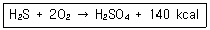
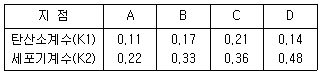
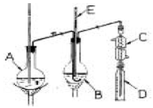
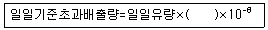

수질환경산업기사 (2005-03-20 기출문제)
1과목: 수질오염개론
1. BOD5 가 180㎎/L이고 COD가 300 ㎎/L인 경우, 탈산소계수(K1)의 값은 0.12/day 였다. 이때 생물학적으로 분해 불가능한 COD는? (단, 상용대수 기준)
- 60 ㎎/L
- 80 ㎎/L
- 120 ㎎/L
- 140 ㎎/L
(정답률: 알수없음)

2. PCB에 관한 설명으로 틀린 것은?
- 산, 알칼리, 물과 반응하지 않는다.
- 고온에서 염소이온의 해리로 대부분의 금속과 합금을 부식시킨다.
- 만성 중독증상으로 카네미유증이 대표적이며, 간장장애, 피부장애, 정신 권태, 수족 저림, 발암 등이 널리 알려져 있다.
- 화학적으로 불활성이고 내열성과 절연성이 좋다.
(정답률: 알수없음)
3. Bacteria의 약 80%는 H2O이고, 약 20%가 고형물로 구성되어 있다. 이 고형물중 유기물질은 약 몇 %인가?
- 15%
- 30%
- 50%
- 90%
(정답률: 알수없음)
4. 박테리아의 경험적인 화학적 분자식은 C5H7O2N으로 알려져 있다. 10g의 박테리아가 산화될 때 소모되는 이론적 산소량은? (단, 이때 질소는 암모니아로 전환됨)
- 11.2g
- 14.2g
- 17.2g
- 19.2g
(정답률: 알수없음)
5. Lime을 사용하여 경수를 연수화하고자 할 때의 화학반응식은 다음과 같다. CaO + Ca(HCO3)2 = 2CaCO3↓ + H2O 이 식을 이용하여 Ca(HCO3)2 중 Ca 80mg/ℓ와 결합하는데 필요한 순도 85%의 CaO의 양은? (단, Ca 원자량: 40, 비중은 1.0 기준)
- 약 98 mg/ℓ
- 약 112 mg/ℓ
- 약 127 mg/ℓ
- 약 132 mg/ℓ
(정답률: 알수없음)
6. 친수성콜로이드의 특성과 가장 거리가 먼 것은?
- 표면장력은 분산매보다 상당히 작다.
- 에멀젼상태이다.
- 틴달효과가 현저하다.
- 점도는 분산매보다 현저히 크다.
(정답률: 알수없음)
7. 효모(Yeasts)는 다음중 어느 분류에 속하는가?
- 조류(Algae)
- 균류(Fungi)
- 세균(Bacteria)
- 원생동물(Protozoa)
(정답률: 알수없음)
8. 다음 반응식에 관계하는 미생물은?

- Sphaerotilus
- Thiobacillus
- Leptothrix
- Hydrogenomonas
(정답률: 알수없음)
9. 1차반응에 있어 반응 초기의 농도가 100 mg/L이고, 4시간 후에 10 mg/L로 감소되었다. 반응 2시간 후의 농도(mg/L)는?
- 21.6
- 31.6
- 41.6
- 51.6
(정답률: 알수없음)
10. 다음 중 응집처리시 응집의 원리와 가장 거리가 먼 것은?
- Zeta potential을 감소시킨다.
- Van der Waals힘을 증가시킨다.
- 응집제를 투여하여 입자끼리 뭉치게 한다.
- 콜로이드입자의 표면전하를 증가시킨다.
(정답률: 알수없음)
11. 대상오염물질이 공간적으로 균일하게 분포하고 있다고 가정된 시스템으로써 가장 일반적인 적용은 호수를 연속 교반반응조로 가정하고 호수에 매년 축적되는 인산과 같은 무기물질의 수지를 평가하는데 적용하는 모델형태로 가장 알맞는 것은?(단, 모델링의 공간성 기준)
- 무차원모델
- 일차원모델
- 이차원모델
- 삼차원모델
(정답률: 알수없음)
12. Formaldehyde(CH2O)의 COD/TOC의 비는?
- 2.67
- 2.88
- 3.37
- 3.65
(정답률: 알수없음)
13. 호소의 부영양화를 나타내는 부영양화도 지수는 Carlson에 의해 개발되어 Carlson지수라고도 하는데 다음 중 Carlson지수와 가장 거리가 먼 것은?
- TSI(SD)
- TSI(Chl)
- TSI(T-P)
- TSI(T-N)
(정답률: 알수없음)
14. Na+ 138mg/L, Ca2+ 200mg/L, Mg2+ 264mg/L인 농업용수가 있다. 이 때 SAR(Sodium Adsorption Ratio)의 값은? (단, Na원자량: 23, Ca원자량: 40, Mg원자량: 24.3)
- 0.7
- 1.5
- 2.1
- 3.2
(정답률: 알수없음)
15. 해류와 그것을 일으키는 원인이 알맞게 짝지어진 것은?
- 상승류- 해저의 화산활동
- 조류- 해수의 염분, 온도차이에 의한 작용
- 쓰나미- 바람과 해양 및 육지의 상호작용
- 심해류- 해수의 밀도차에 의해 형성
(정답률: 알수없음)
16. 물의 물리 화학적 특성중 틀린 것은?
- 물은 액체상태에서는 수소와 산소의 공유결합 및 수소결합으로 되어 있다.
- 물(액체)분자는 H+와 OH- 평형을 이루어 극성을 형성하지 않으므로 다양한 용질에 유효한 용매이다.
- 물은 광합성의 수소 공여체이며 호흡의 최종산물로서 생체의 중요한 대사물이 된다.
- 물은 비열이 커서 수온의 급격한 변화를 방지해 주므로 생물의 활동이 가능한 기온이 유지된다.
(정답률: 알수없음)
17. pH 1.7인 용액중의 [H+]은 몇 mg/ℓ인가?
- 19.95
- 17.53
- 15.45
- 13.53
(정답률: 알수없음)
18. 자정계수(f)에 관한 다음 설명중 잘못된 것은?
- 자정계수의 단위는 day-1이다.
- 재포기계수/탈산소계수로 나타낸다.
- 수온이 증가할수록 자정계수는 작아진다.
- 하천의 유속이 클수록 자정계수는 커진다.
(정답률: 알수없음)
19. 어느 하천의 상태가 다음표와 같을 때, 자정능력이 가장 큰 지점은?

- A
- B
- C
- D
(정답률: 알수없음)
20. 세균 세포구조 중 세포의 호흡능이 집중된 부위로 추정되는 것은?
- 리보좀
- 메소좀
- 협막
- 세포벽
(정답률: 알수없음)
2과목: 수질오염방지기술
21. 인구 20,000명인 공장지대에서 배출되는 하수량은 2,000m3/day이며, 이 공장의 BOD 배출농도는 500mg/ℓ이다. 이 때 이 지대의 BOD배출 인구 당량은?
- 30 g/인.day
- 50 g/인.day
- 70 g/인.day
- 90 g/인.day
(정답률: 알수없음)
22. 활성슬러지 공법으로 폐수처리를 실시하는 경우 고형물 체류시간(SRT)을 6.4일로 맞추기 위하여 다음 조건이 주어졌을 때 슬러지 폐기량은 1일 몇 m3인가 ? (단, 조건: 유출수SS 1.0mg/L, 폐슬러지 농도 5000mg/L, MLSS농도 2500mg/L, 탱크의 체적(體積) 700m3)
- 약 55m3
- 약 60m3
- 약 65m3
- 약 70m3
(정답률: 알수없음)
23. 유량이 4,000m3/day인 폐수의 BOD와 SS의 농도가 각각 200mg/ℓ이라고 할 때 포기조의 체류시간을 6시간으로 하였다. 포기조내의 F/M비를 0.5로 하는 경우에 포기조내 MLSS 농도는?
- 1,300 mg/ℓ
- 1,400 mg/ℓ
- 1,500 mg/ℓ
- 1,600 mg/ℓ
(정답률: 알수없음)
24. 어떤 공장의 폐수량 500 m3/day, BOD 2000mg/ℓ, N과 P는 없다고 가정하고 활성오니처리를 위해서 필요한 (NH4)2SO4의 양은? (단, 영양조건은 BOD:N:P=100:5:1 이라 가정한다.)
- 155.83 kg/day
- 182.64 kg/day
- 235.72 kg/day
- 289.34 kg/day
(정답률: 알수없음)
25. 탈질소를 위하여 폐수에 일반적으로 첨가하는 약품은?
- 고분자응집제
- 질산
- 활성탄
- 메탄올
(정답률: 알수없음)
26. 정수장 여과지의 여상에 기포가 생기면 여과효율이 급격히 감소한다. 여상에 기포가 갇히게 되는 원인과 가장 거리가 먼 것은?
- 여상 내부의 수온이 상승한다.
- 여상 내부의 압력이 대기압보다 낮아진다.
- 여상에서 증식하는 조류가 산소를 방출한다.
- 여상의 급격한 수두 변화로 공극이 형성된다.
(정답률: 알수없음)
27. 모래여과상에서 공극 구멍보다 더 작은 미세한 부유물질을 제거함에 있어 모래의 주요 제거기능과 가장 거리가 먼 것은?
- 부착
- 응결
- 거름
- 흡착
(정답률: 알수없음)
28. 합성세제를 제거하기 위해 생물막 공법을 채택하였다. 다음 중 활성슬러지 공법과 비교하여 생물막 공법의 장, 단점이라 볼 수 없는 것은?
- 슬러지 보유량이 크고 생물상이 다양하다.
- 균일 폭기가 어렵다.
- 유해물질에 대한 내성이 높다.
- 분해 속도가 빠른 기질제어에 효과적이다.
(정답률: 알수없음)
29. 10000명의 처리인구를 가진 폐수처리시설에서 슬러지 발생량이 0.12kg/cap-d이다. 슬러지는 70%의 휘발성물질을 포함하고 있으며 이중 50%가 분해된다. 슬러지 1kg이 분해될 때 0.89m3/kg의 소화가스가 발생하며 50%의 메탄이 함유되어 있다. 메탄의 열량은 35,850kJ/m3이다. 소화조 보온을 위해 가용한 에너지(kJ/hr)는?
- 약 150,000kJ/hr
- 약 280,000kJ/hr
- 약 420,000kJ/hr
- 약 670,000kJ/hr
(정답률: 알수없음)
30. 피혁공장에서 BOD 400㎎/ℓ의 폐수가 500m3/day로 방류되고 이것을 활성오니법으로 처리하고자 한다. 하루 슬러지는 유입유량의 5%(함수율 99%)가 발생된다고 보고 이 때 슬러지를 5㎏/m2-h(고형물 기준)의 성능을 가진 진공여과기로 매일 5시간씩 탈수작업을 하여 처리하려면 여과기 면적은 얼마나 소요되는가?(단, 슬러지비중은 1.0 으로 가정한다.)
- 5m2
- 10m2
- 15m2
- 20m2
(정답률: 알수없음)
31. 다음 생물학적 처리공정들에 대한 설명으로 적절한 것은?
- SBR은 같은 탱크에서 폐수유입, 생물학적반응, 처리수배출 등의 순서를 반복, 처리하는 공정이다.
- 회전원판반응조는 혐기성조건을 유지하면서 고형물을 제거하는 처리공정이다.
- 살수여상(Trickling Filter)은 여재를 사용하지 않으면서 고부하의 운전에 용이한 처리공정이다.
- 고율활성슬러지공정은 질소, 인 제거를 위한 미생물 부착성장 처리공정이다.
(정답률: 알수없음)
32. 생물학적 인 제거공법에서 호기성 공정의 주된 역할에 대하여 가장 잘 설명한 것은?
- 용해성 인 과잉 산화
- 용해성 인 과잉 방출
- 용해성 인 과잉 환원
- 용해성 인 과잉 흡수
(정답률: 알수없음)
33. 다음 액체염소의 주입으로 생성된 유리염소, 결합잔류 염소의 살균력이 바르게 나열된 것은?
- HOCl ＞ Chloramines ＞ OCl-
- HOCl ＞ OCl- ＞ Chloramines
- Chloramines ＞ OCl- ＞ HOCl
- OCl- ＞ HOCl ＞ Chloramines
(정답률: 알수없음)
34. 부상조의 최적 A/S비는 0.04(mL공기/mg고형물), 처리할 폐수의 부유물질 농도는 250mg/L, 20℃에서 5.1 atm으로 가압할 때 반송율(%)은? (단, f=0.8, 공기용해도 as=18.7㎖/ℓ, 20℃ 기준, 순환 방식 기준)
- 10.7
- 13.4
- 20.1
- 26.8
(정답률: 알수없음)
35. 다음 중 흡착과 관련된 내용이라 볼 수 없는 것은?
- Langmuir식
- Freundlich식
- AET식
- BET식
(정답률: 알수없음)
36. 다음 중 암모니아성 질소를 air stripping 할 때의(폐수처리시) 최적 pH는?
- 4
- 6
- 8
- 10
(정답률: 알수없음)
37. 슬러지 개량(Conditioning)의 방법에는 약품처리, 열처리, 냉동, 방사선처리, 세척방법 등이 있는데 그렇다면 슬러지 개량을 행하는 주된 이유는?
- 탈수특성을 좋게하기 위해
- 응집특성을 좋게하기 위해
- 침강특성을 좋게하기 위해
- 안정화특성을 좋게하기 위해
(정답률: 알수없음)
38. 표면적 20m2의 급속사 여과지에서 10,000m3의 상수를 처리한 후 20ℓ/m2-sec의 율로 20분간 1회 역세정한다. 1회 소요되는 역세정수량은?
- 240m3
- 480m3
- 960m3
- 1820m3
(정답률: 알수없음)
39. 폐수 2000m3/day에서 생성되는 1차슬러지부피(m3/day)는 ? (단, 1차 침전탱크 체류시간 2hr, 현탁고형물 제거효율 60%, 폐수중 현탁 고형물 함유량 220㎎/L, 발생 슬러지 비중 1.03, 슬러지 함수율 94%, 1차 침전 탱크 에서 제거된 현탁 고형물 전량이 슬러지로 발생되는 것으로 가정)
- 약 1.8
- 약 2.2
- 약 3.4
- 약 4.3
(정답률: 알수없음)
40. 기질의 농도가 100mg/ℓ인 폐수를 10mg/ℓ로 처리하고자 한다. 완전혼합형 반응기에서의 반응조 크기(m3)는? (단, 오염물질은 1차 반응식에 따라 분해되며, 정상상태의 흐름으로 가정, 폐수량은 1m3/day, K는 0.1/day)
- 55m3
- 90m3
- 115m3
- 135m3
(정답률: 알수없음)
3과목: 수질오염공정시험방법
41. 어느 도금 공장에서 전기도금용액 탱크에 물 100ℓ를 넣고 NaCN 4g 을 용해하였다. 이 도금용액의 시안이온(CN-)의 농도는? (단, 완전히 해리된다고 가정함, Na 원자량:23 )
- 17 mg/ℓ
- 21 mg/ℓ
- 34 mg/ℓ
- 49 mg/ℓ
(정답률: 알수없음)
42. 가스크로마토그라피의 ECD 검출기로 선택적으로 검출되어 지는 물질과 가장 거리가 먼 것은?
- 니트로화합물
- 유기금속화합물
- 유기할로겐 화합물
- 유기질소 화합물
(정답률: 알수없음)
43. BOD를 측정할 경우 시료의 전처리에 대한 설명이다. 틀린것은?
- 시료의 pH가 6.5-8.5 범위를 벗어나는 시료는 염산(1+11) 또는 4% 수산화나트륨 용액으로 시료를 중화한다.
- 시료중화시 넣어주는 산 또는 알칼리의 양은 시료량의 1.0 %가 넘지 않도록 한다.
- 시료는 시험하기 바로 전에 온도를 20±1℃로 조정한다.
- 일반적으로 잔류염소가 함유된 시료는 BOD용 식종 희석수로 희석 사용한다.
(정답률: 알수없음)
44. 시료의 전처리방법 중 유기물 등을 많이 함유하고 있는 대부분의 시료에 적용되며 칼슘, 바륨, 납 등을 다량 함유한 시료는 난용성의 염을 생성하여 다른 금속성분을 흡착하므로 주의하여야 하는 것은?
- 질산-황산에 의한 분해
- 질산-과염소산에 의한 분해
- 질산-염산에 의한 분해
- 질산-불화수소산에 의한 분해
(정답률: 알수없음)
45. ['정확히 단다'라함은 규정된 양의 검체를 취하여 분석용 저울로 ( )mg까지 다는 것을 말한다. ] ( )안에 알맞는 내용은?
- 0.001 mg
- 0.01 mg
- 0.1 mg
- 1 mg
(정답률: 알수없음)
46. 아스코르빈산 환원법으로 인산염인을 정량분석할 때의 정량범위 및 표준편차로 가장 적절한 것은?
- 0.0004 - 0.03(mgPO4-P), 10 - 3%
- 0.⑤ - 0.5(mgPO4-P), 10 - 3%
- 0.002 - 0.⑤(mgPO4-P), 10 - 2%
- 0.⑤ - 0.5(mgPO4-P), 10 - 2%
(정답률: 알수없음)
47. 유량 측정공식의 형태가 나머지 3개와 다른 것은?
- 오리피스(orifice)
- 벤튜리미터(venturi meter)
- 피토우(pitot)관
- 유량측정용 노즐(nozzle)
(정답률: 알수없음)
48. 다음 그림은 불소정량을 위한 증유장치이다. A는 수증기 발생용 플라스크, C는 냉각기, D는 수기, E는 온도계라면 B는 무엇인가?

- 평저플라스크
- 킬달플라스크
- 환전플라스크
- 크라이젠플라스크
(정답률: 알수없음)
49. 다음 중 색도 측정에서 사용되지 않는 것은 ? (단, 투과율법 기준)
- 백금-코발트 표준물질
- 여과장치
- 광전분광광도계
- 증발장치
(정답률: 알수없음)
50. 유도결합플라스마 발광광도법의 분석장치 설정조건중 일반적인 가스의 유량범위로 가장 적절한 것은?(단, 단위 : L/min, 냉각가스, 보조가스, 운반가스)
- 1-10, 1-2, 0.2-0.4
- 10-18, 0-2, 0.5-2
- 18-35, 2-10, 2-4
- 35-50, 10-20, 8-10
(정답률: 알수없음)
51. 다음 측정항목 중 시료를 보존할 때 주입하는 시약이 다른 것은?
- 노르말핵산추출물질
- 암모니아성질소
- 총인
- 시안
(정답률: 알수없음)
52. 다음 가스크로마토그래피법에서 흡착성 충전물 중 고체 분말이 아닌 것은?
- 실리카겔
- 규조토
- 알루미나
- 합성제올라이트
(정답률: 알수없음)
53. 다음중 클로로필-a의 측정시험과 가장 관계가 먼 항목은?
- 아세톤
- 유리섬유거름종이
- 광전분광광도계
- 220nm
(정답률: 알수없음)
54. 다음과 같이 시약을 조제했을 경우 몰농도(M)가 가장 높은 것은?(단, Na=23, S=32, Cl=35.5)
- NaOH 0.4g을 물 1ℓ에 녹여 표선을 맞췄다.
- H2SO4 4.9g을 물 2ℓ에 녹여 표선을 맞췄다.
- NaCl 5.85g을 물 10ℓ에 녹여 표선을 맞췄다.
- HCl 365g을 물 1㎘에 녹여 표선을 맞췄다.
(정답률: 알수없음)
55. 수질오염공정시험방법상 '비소'의 분석방법과 거리가 먼것은?
- 가스크로마토그래피법
- 유도결합플라스마 발광광도법
- 흡광광도법(디에틸디티오카르바민산은법)
- 원자흡광광도법
(정답률: 알수없음)
56. 0.2mg/mL인 표준용액을 10mm의 흡수용기에 일정량 넣고 흡광도를 측정했더니 60%가 투과되었다. 표준용액의 흡광도는?
- 흡광도 0.22
- 흡광도 0.33
- 흡광도 0.44
- 흡광도 0.55
(정답률: 알수없음)
57. BOD를 측정하려고 검수를 희석수로 25배와 50배 희석하여 20℃에서 5일간 부란시킨후 용존산소를 측정한 결과 25배 희석한 것은 1.0ppm, 50배 희석한 것은 4.0ppm이었다. 처음 용존산소량이 8.0ppm이라면 검수의 BOD로 가장 알맞는 것은?
- 175ppm
- 188ppm
- 200ppm
- 225ppm
(정답률: 알수없음)
58. 다음 측정항목 중 시료의 최대보존기간이 가장 짧은 것은?
- 시안
- 염소이온
- 부유물질
- 색도
(정답률: 알수없음)
59. 총대장균군실험에 관한 내용중 알맞지 않은 것은?
- 모든 조작은 무균조작을 원칙으로 한다.
- 검체의 균일화를 위해 고형검체인 경우 강하게 진탕한 후 잘게 분쇄하여 검체로 사용한다.
- 총대장균군은 그람음성, 무아포성의 간균으로서 유당을 분해하여 가스 또는 산을 발생하는 모든 호기성 또는 통성 혐기성균을 말한다.
- 시료중 잔류염소가 함유되었을 때는 멸균된 10% 티오 황산나트륨용액으로 잔류염소를 제거하여야 한다.
(정답률: 알수없음)
60. 어떤 폐수 50mℓ를 취하여 산성 100℃에서 KMnO4에 의한 산소 소비량을 측정하였다. 시료적정에 소요된 0.025N-KMnO4의 양은 6.25mℓ이었다. 이 폐수의 COD는? (단, 0.025N-KMnO4의 factor는 1.025이며, 공시험 값은 0.70 mℓ이었다.)
- 약 23 mg/ℓ
- 약 35 mg/ℓ
- 약 39 mg/ℓ
- 약 42 mg/ℓ
(정답률: 알수없음)
4과목: 수질환경관계법규
61. 수질환경보전법상의 행정처분의 종류에 해당되지 않는 것은?
- 이전명령
- 조업정지
- 개선명령
- 폐쇄명령
(정답률: 알수없음)
62. 폐수종말처리시설기본계획에 포함되어야 하는 사항과 거리가 먼 것은?
- 오염원 분포 및 폐수배출량과 그 예측에 관한 사항
- 공사비 및 공사기간에 관한 사항
- 폐수종말처리시설에서 처리된 폐수가 방류수역의 수질에 미치는 영향에 관한 평가
- 폐수종말처리시설의 설치 및 운영자에 관한 사항
(정답률: 알수없음)
63. 폐수처리업자의 준수사항 중 수탁한 폐수의 보관기간기준으로 적절한 것은?
- 정당한 사유없이 30일 이상 보관할 수 없다.
- 정당한 사유없이 15일 이상 보관할 수 없다.
- 정당한 사유없이 10일 이상 보관할 수 없다.
- 정당한 사유없이 7일 이상 보관할 수 없다.
(정답률: 알수없음)
64. 배출시설 및 방지시설의 오염도 검사를 의뢰할 수 있는 기관과 거리가 먼 곳은?
- 국립환경연구원 및 그 소속기관
- 유역환경청 및 지방환경청
- 환경관리공단의 소속사업소
- 환경보전협회 및 그 소속기관
(정답률: 알수없음)
65. 다음 조건에 따른 과징금 부과금액으로 적절한 것은?
- 1500만원
- 2000만원
- 2500만원
- 3000만원
(정답률: 알수없음)
66. 일일기준초과배출량의 산정방법이다. 다음 중 ( )에 적합한 내용은?

- 배출농도
- 배출허용기준농도
- 배출허용기준초과농도
- 배출기준농도
(정답률: 알수없음)
67. 초과부과금의 산정기준에서 오염물질 1킬로그램당 부과액이 가장 큰 것은?
- 망간 및 그 화합물
- 크롬 및 그 화합물
- 아연 및 그 화합물
- 구리 및 그 화합물
(정답률: 알수없음)
68. 환경기준에서 수은의 하천수질기준으로 적절한 것은 ? (단, 구분: 사람의 건강보호, 등급: 전수역)
- 검출되어서는 안됨
- 0.01mg/L 이하
- 0.02mg/L 이하
- 0.03mg/L 이하
(정답률: 알수없음)
69. 골프장안의 잔디 및 수목등에 맹, 고독성농약을 사용한 자에 대한 행정처분기준으로 적절한 것은？
- 1년 이하의 징역 또는 1천만원 이하의 벌금
- 1년 이하의 징역 또는 500만원 이하의 벌금
- 1천만원 이하의 과태료
- 100만원 이하의 과태료
(정답률: 알수없음)
70. 국립환경연구원에서 교육을 받아야 할 대상자로 적합한 자는?
- 폐수처리업에 종사하는 기술요원
- 배출시설업에 종사하는 기술요원
- 방지시설업에 종사하는 기술요원
- 환경관리인
(정답률: 알수없음)
71. 1일 폐수배출량이 1500m3인 사업장의 종별규모로 알맞는 것은?
- 1종 사업장
- 2종 사업장
- 3종 사업장
- 4종 사업장
(정답률: 알수없음)
72. 시장, 군수, 구청장이 호소의 낚시금지구역 또는 낚시제한 구역을 지정하고자 하는 경우에 고려할 사항과 가장 거리가 먼 것은?
- 호소의 이용목적
- 낚시터 인근에서의 쓰레기 발생현황 및 처리여건
- 낚시시기, 방법 등 제한사항
- 호소의 연도별 낚시인구 현황
(정답률: 알수없음)
73. 수질오염방지시설중 생물화학적 처리시설이 아닌 것은?
- 폭기시설
- 돈사톱밥발효시설
- 접촉조
- 살균시설
(정답률: 알수없음)
74. 수질환경보전법상 용어의 정의중 잘못 기술된 것은?
- '폐수'라 함은 산업활동으로 발생되는 오염물질이 포함된 오수로 환경부령으로 정하는 것을 말한다.
- '수질오염물질'이라 함은 수질오염의 요인이 되는 물질로서 환경부령으로 정하는 것을 말한다.
- '폐수배출시설'이라 함은 수질오염물질을 배출하는 시설물·기계·기구 기타 물체로서 환경부령으로 정하는 것을 말한다.
- '수질오염방지시설'이라 함은 폐수배출시설로부터 배출되는 수질오염물질을 제거하거나 감소시키는 시설로서 환경부령으로 정하는 것을 말한다.
(정답률: 알수없음)
75. 위임업무보고사항 중 과징금 부과실적의 보고기일로 적절한 것은?
- 매반기 종료후 10일이내
- 매분기 종료후 10일이내
- 매분기 종료후 15일이내
- 다음달 10일까지
(정답률: 알수없음)
76. 초과부과금 부과대상 오염물질이 아닌 것은?
- 벤젠
- 망간 및 그 화합물
- 부유물질
- 구리 및 그 화합물
(정답률: 알수없음)
77. 시·도지사등은 환경관리지역내(관할구역)의 오염원등에 대한 조사를 몇 년마다 실시하여야 하는가?
- 2년
- 3년
- 5년
- 7년
(정답률: 알수없음)
78. 환경기준에서 하천수질기준에 해당되지 않는 항목은?
- DO
- SS
- COD
- pH
(정답률: 알수없음)
79. 기본부과금의 지역별 부과계수중 '특례지역'의 부과계수는?
- 1
- 1.5
- 2
- 2.5
(정답률: 알수없음)
80. 다음의 오염물질중 특정수질유해물질에 해당되지 않는 것은?
- 셀레늄 및 그 화합물
- 트리클로로메탄
- 사염화탄소
- 페놀류
(정답률: 알수없음)
생물학적으로 분해 불가능한 COD = COD - BOD5 = 300 - 180 = 120 ㎎/L
탈산소계수(K1)는 분해 가능한 유기물이 얼마나 빠르게 분해되는지를 나타내는 지표이다. K1 값이 작을수록 분해가 느리다는 것을 의미한다. 따라서 K1 값이 0.12/day인 경우, 분해가 느리다는 것을 의미한다.
상용대수 기준에 따르면, 분해되는 물질의 양은 초기 농도에 비례한다. 따라서 생물학적으로 분해 불가능한 COD의 양이 120 ㎎/L인 경우, 초기 COD 농도가 200 ㎎/L일 때 생물학적으로 분해 가능한 COD의 양은 80 ㎎/L이 된다.
따라서 정답은 "80 ㎎/L"이다.